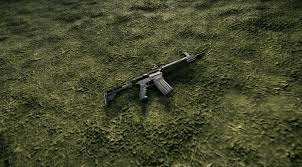
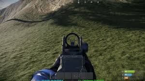
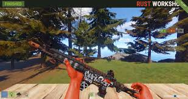

M249 в игре Rust
Создатель Rob Smith
Posted on May 15, 2023 at 12:00 PM
Штурмовая винтовка LR-300 Преследуйте своих врагов с этой легкой и мощной штурмовой винтовкой. Урон 40 Скорострельность 500 ВВМ Разброс 0.2° Вместимость 30 Перезарядка 4 сек Достать 2 сек
LR-300 Штурмовая винтовка автоматический стрелковое оружие , которое может стрелять все 5,56 Rifle Ammo варианты. Это экспериментальное оружие в том смысле, что оно имеет меньшую отдачу и более высокий разброс, в отличие от штурмовой винтовки, которая имеет высокую отдачу и низкий разброс.
Можно получить у Ящиков, Брэдли БТР , Airdrops , Bandit Camp и Attack Helicopters . Одно из самых современных ружей в Rust и может стоить до 19 800 долларов в реальной жизни. Описание предмета является возможной ссылкой на серию игр STALKER, так как LR-300 - самое распространенное оружие серии 5.56. При глупой переработке вы получаете 1 пружину и 20 высококачественных металлов.
Пожарный режим Полностью автоматическая Повреждение головы 80 Повреждение груди 40 Повреждение оружия 40 Повреждение ног 30 отдача Низкий Спектр 188 Вместимость 30
Оружие куплено в лагере бандитов или найдено в нескольких ящиках для добычи. Если вы получите это оружие. Вы должны добавить 2-3х прицелов для дальнего и среднего диапазона. Опытные игроки смогут использовать его для стрельбы на большие расстояния автоматически или с помощью крана. Лучше всего использовать в качестве вспомогательного оружия или закрепить противника в клановых войнах / рейдах.